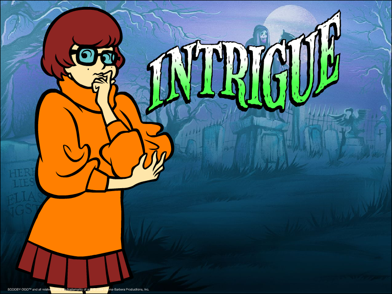
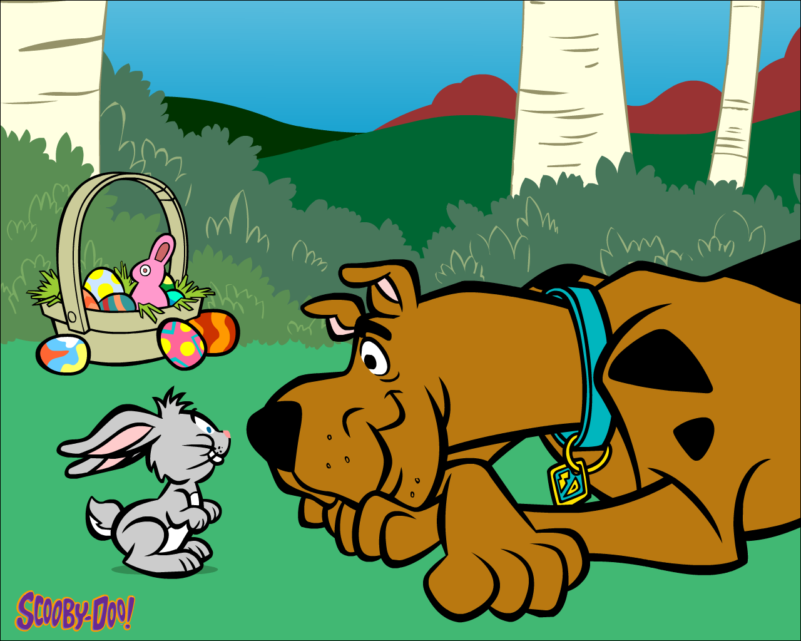
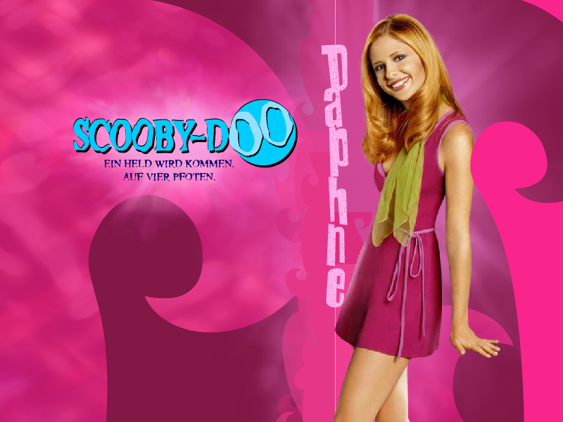
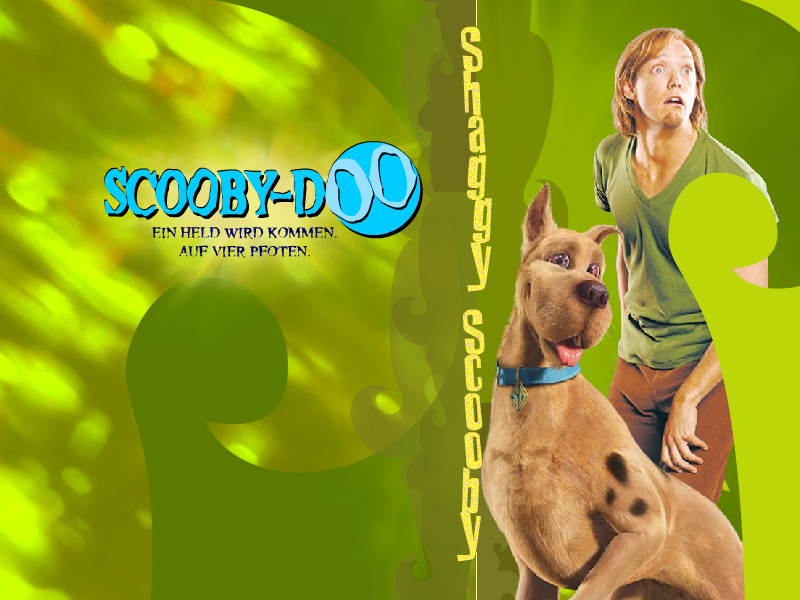

Scooby-Doo Screensavers

Scooby Gang

DOWNLOAD
 .exe file zipped (1.42 MB)
.exe file zipped (1.42 MB)
Scooby-Doo Easter

DOWNLOAD
.exe file zipped (0.99 MB)
Daphne (warnerbros.de)

DOWNLOAD
.exe file zipped (584 KB)
Fred (warnerbros.de)
DOWNLOAD
.exe file zipped (562 KB)
Shaggy & Scooby-Doo (warnerbros.de)

DOWNLOAD
.exe file zipped (670 KB)
Velma (warnerbros.de)
DOWNLOAD
.exe file zipped (592 KB)
Scooby Doo 2 – Die Monster sind los (warnerbros.de)

DOWNLOAD
.exe file zipped (1.71 MB)